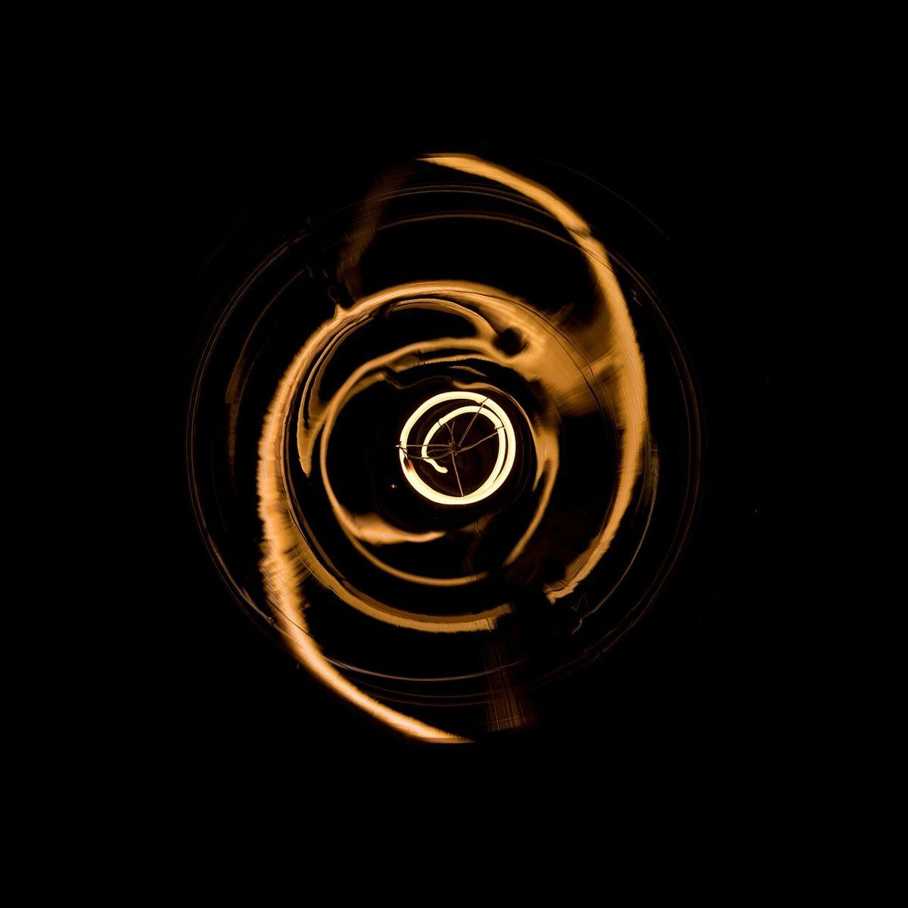

6:30 / 店のこと
店のこと
お店について確認できているのは、所在地とInstagramのアカウントだけです。
確認できていること
- 所在地〒901-2201沖縄県宜野湾市新城2丁目33-1
- 店名CAFE Rise&Shine業種はカフェ
- 電話なし連絡はInstagramから
- 他準備中営業時間・定休日・メニュー・価格・ご予約・駐車場

想像してみる
「Rise&Shine」という名前から
この項目は制作側が想像して書いたものです。お店の実際の様子・考え・メニューとは関係がありません。
由来は分かりません。制作側は、朝のはじまりに温かい飲み物でひと息つく、そんな時間に寄り添う店かもしれない、と想像しました。たとえば出かける前の少しの時間に立ち寄って、気持ちを整える。そんな場面を思い浮かべています(実際のお店の姿ではありません)。

